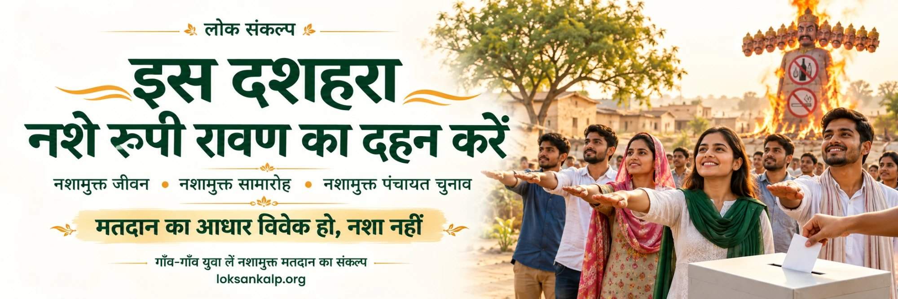

इस दशहरा नशे रूपी रावण का दहन करें
नशामुक्त जीवन नशामुक्त समारोह नशामुक्त पंचायत चुनाव

दशहरा · नशामुक्त पंचायत चुनाव
बुराई पर अच्छाई की विजय का पर्व हमारे व्यवहार में भी बदलाव लाए। आइए, दैनिक जीवन, सामाजिक समारोहों और पंचायत चुनावों में नशे के सेवन, वितरण और मनुहार का बहिष्कार करें।
मतदान का आधार हमारा विवेक हो, नशा या कोई प्रलोभन नहीं।
लोकसंकल्प का आह्वान है कि युवा गाँव-गाँव में एकत्र होकर नशामुक्त मतदान संकल्प सभा आयोजित करें और सामूहिक संकल्प लें।
हमारा संकल्प
हम स्वयं नशे से दूर रहेंगे और अपने सामाजिक आयोजनों में नशा नहीं परोसेंगे। पंचायत चुनावों में नशा न स्वीकार करेंगे, न बाँटेंगे और न उसके वितरण का समर्थन करेंगे। हम बिना किसी नशीले प्रलोभन के अपने विवेक से मतदान करेंगे तथा दूसरों को भी प्रेरित करेंगे।
आइए, अपनी पंचायत के चुनाव को नशामुक्त रखने का लोकसंकल्प लें।
नशामुक्त मतदान का संकल्प
यह संकल्प अभी खुला नहीं है।
यह संकल्प अब बंद हो चुका है। नीचे दी गई गिनती वहीं रुक गई है जहाँ आयोजन समाप्त हुआ। आप अपना संकल्प अब भी दर्ज कर सकते हैं।
गाँव-गाँव
नशामुक्त मतदान संकल्प सभा का पंजीकरण
यह फ़ॉर्म गाँव में हुई सभा के लिए है, किसी एक व्यक्ति के संकल्प के लिए नहीं। सभा करवाने वाला एक बार भरे और लिख दे कि कितने लोगों ने सामूहिक संकल्प लिया। वही संख्या नीचे की गिनती में जुड़ जाएगी।
पंजीकरण अभी खुला नहीं है।
पंजीकरण अब बंद हो चुका है।
अब तक